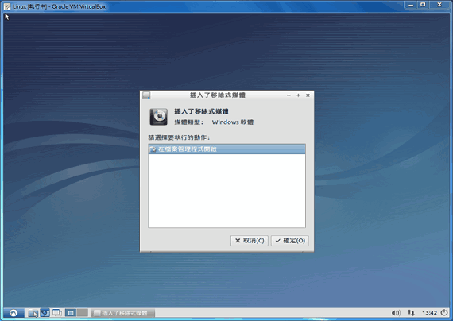
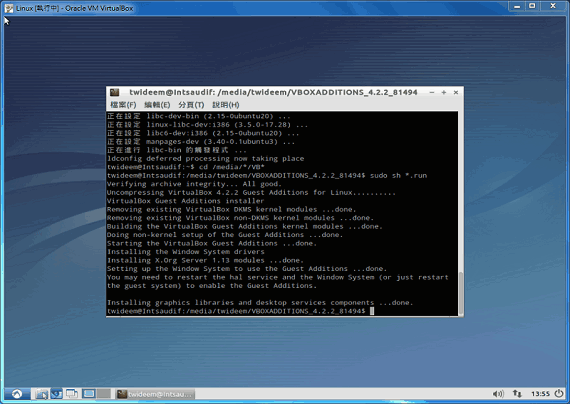
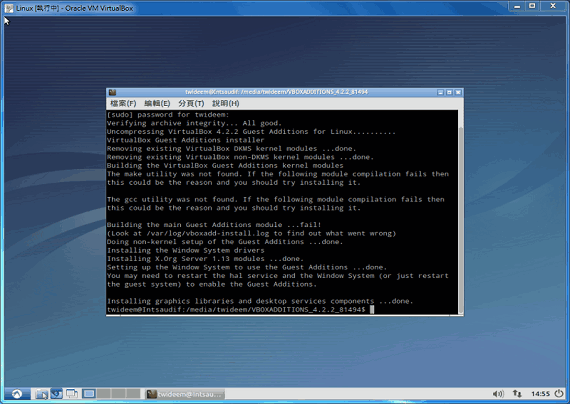
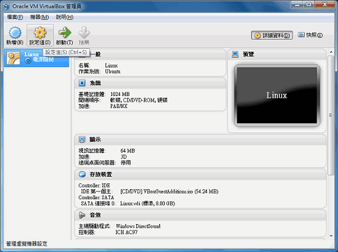
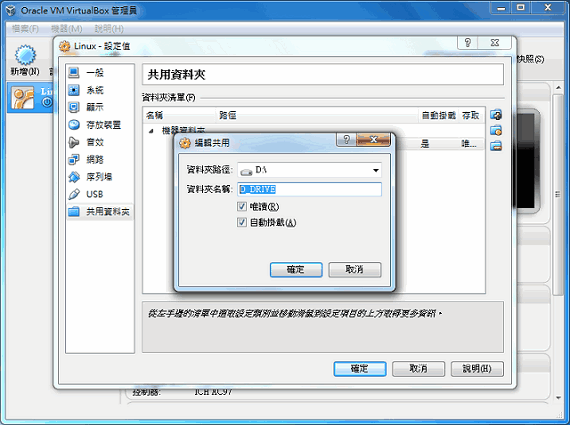
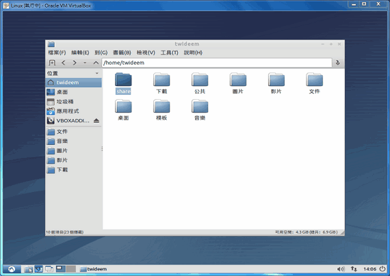
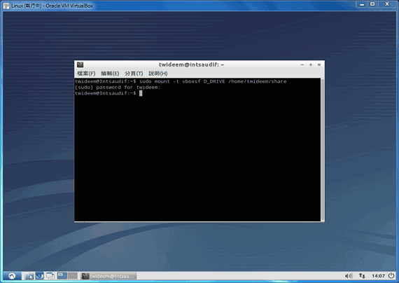
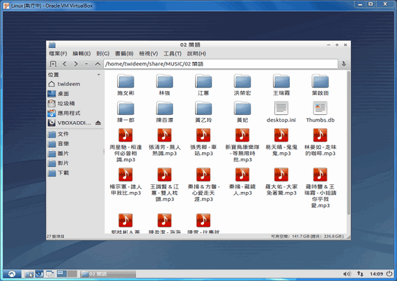

如何在 Lubuntu 安裝 Guest Additions
如果你安裝 Lubuntu 的目的，是拿來工作，而不只是練習 Linux，那麼你應該安裝 Guest Additions，讓你的 Lubuntu 反過來透過 VirtualBox 做更多事，而不是只被動地受 VirtualBox 驅動 Lubuntu。例如，安裝好 Guest Additions 的話，你的 Lubuntu 可以開啟 Windows 分享出來的資料夾，來共用檔案！
安裝 Guest Additions
首先，請按「右 Ctrl + D」，或點選功能表的「裝置」→「安裝 Guest Additions」，這樣會讓 Lubuntu 掛載一張叫做 VBOXADDTIONS_4.2.2_81494 的光碟。

【按下「右 Ctrl + D」後，置入了一張 VirtualBox 的驅動程式光碟。】
接著，請按 Lunbuntu 最左下角、類似 Windows 的「開始」鈕，然後選擇「附屬應用程式」→「LX 終端機」。
請在「LX 終端機」依序輸入如下指令……
１、安裝編譯環境（因為 Lubuntu 太乾淨，所以沒有編譯環境，無法安裝 Guest Addtions。）
請輸入：
sudo apt-get install dkms gcc make
輸入 Lubuntu 要求的密碼後，將透過網路下載與安裝所需要的套件，請等候約十數分鐘。
２、安裝 Guest Addtions
請輸入如下指令，記得大小寫是有差異的：
cd /media/*/VB*
然後輸入如下指令：
sudo sh *.run
這時 Lubuntu 要求輸入密碼。
等候安裝。如果安裝畫面中，確定看到 Building the Guest Additions kernel modules ... done 的訊息，表示安裝成功，請重新啟動 Lubuntu，你已經安裝好 Guest Additions 了！
但如果看到的是 Building the main Guest Additions module ... fail 訊息，則安裝是失敗的！這問題通常出在你 Lubuntu 的編譯環境不足以執行 Guest Additions，之前執行 sudo apt-get install dkms gcc make 就是為了排除這個問題。（但如果還是出現這樣問題，請改以 yum 來安裝試看看，不過這部分請上網搜尋相關資料。）


掛載 Windows 的資料夾
安裝好 Guest Additions，你的 Lubuntu 將被賦予更多功能，例如更多硬體周邊裝置可以驅動、更高的螢幕解析度可以使用。而其中最讓人感興趣的，當然還是掛載 Windows 資料夾到 Lubuntu 用的功能。
１、將 Windows 資料夾設定為「共用資料夾」
在你 VirtaulBox 安裝的 Lubuntu 圖示上，點「設定值」，然後在「共用資料夾」的地方，指定你想掛載的 Windows 資料夾。


２、在 Lubuntu 準備一個存放 Windows 共用資料夾的目錄
啟動 Lubuntu，然後在你的使用者家目錄，建立一個準備用來存放 Windows 共用資料夾的目錄，這裡我將新建立的目錄取名為 share。

３、輸入指令將 Windows 共用資料夾掛載到 Lubuntu 的目錄
然後開啟「LX 終端機」，輸入如下指令，即可將 Windows 共用資料夾，掛載到 share 目錄裡去：
sudo mount -t vboxsf D_DRIVE /home/你的 Lubuntu 使用者名稱/share
D_DRIVE 是在 VirtualBox 指定 Windows 資料夾時，所取出來的名稱，你可能會取不一樣的名字。其他灰色粗體字的部分也是，因人而異。


Lubuntu 真的是很棒的 Linux 發行版，它不僅是不依賴硬體設備的輕量級作業系統，其實連軟體資源的依賴程度都盡量降到最低，盡力解決 Linux 元件相依性的問題，這種「軟硬兩部分」都走輕量級路線的發行版，在此推薦給各位嘗試看看，相信你一定會喜歡他乾淨清爽的感覺！